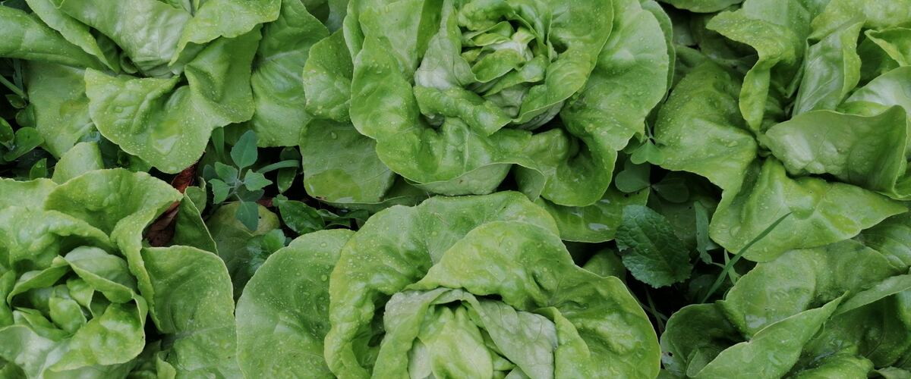
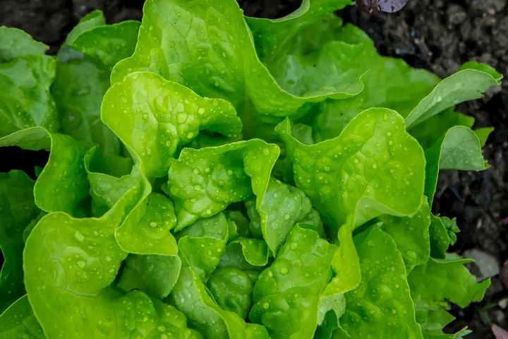
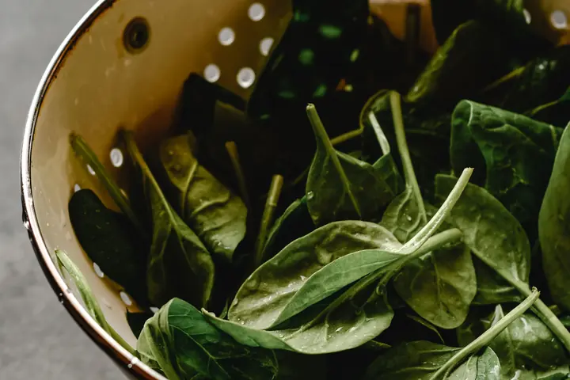
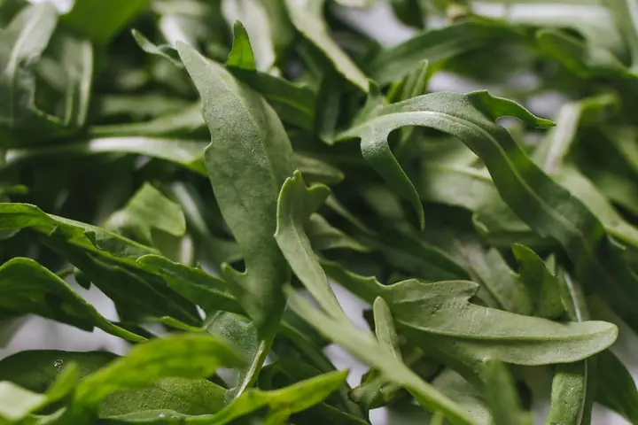
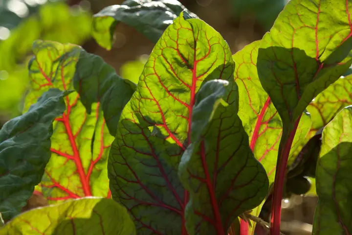
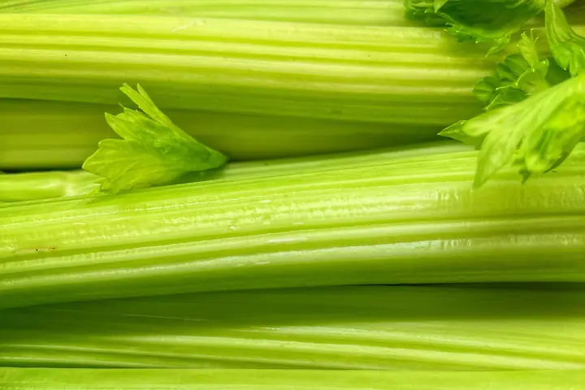
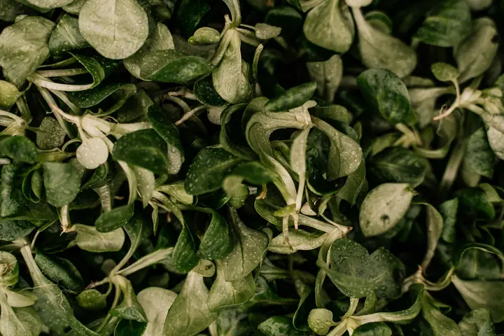
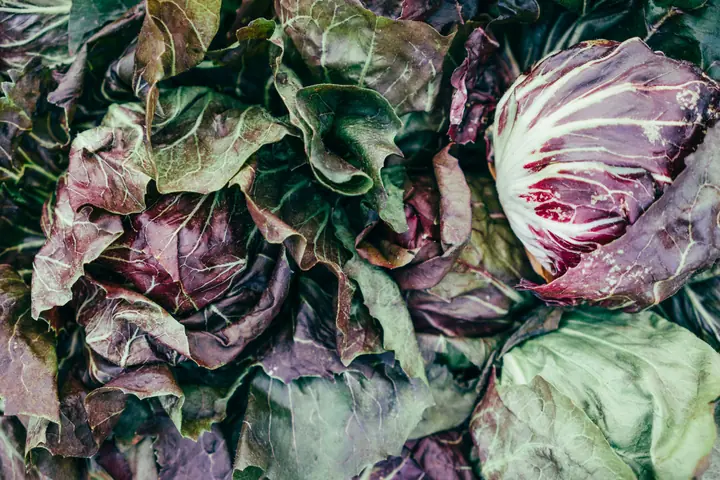

When to plant · 7 plants
Salad greens
Leafy crops for spring and fall, plus crunchy celery. Pick one for its dates in your town and how to grow it.


Planting order
When each one first goes in around Portland, starting indoors where that comes first. Colder towns run later.
- Early spring
- Spinach, Arugula, Swiss chard, Celery, Mâche
Planting windows at a glance
Main planting window in five reference towns. Each plant's page has every town.
| Plant | Portland | Seattle and Tacoma | Bend and Redmond | Spokane | Boise and Meridian |
|---|---|---|---|---|---|
| Lettuce | Mar 1 – Apr 26 | Mar 1 – Apr 26 | Apr 28 – Jun 23 | Apr 1 – May 27 | Mar 20 – May 15 |
| Spinach | Mar 1 – Apr 5 | Mar 1 – Apr 5 | Apr 28 – Jun 2 | Apr 1 – May 6 | Mar 20 – Apr 24 |
| Arugula | Mar 1 – Apr 12 | Mar 1 – Apr 12 | Apr 28 – Jun 9 | Apr 1 – May 13 | Mar 20 – May 1 |
| Swiss chard | Mar 15 – May 10 | Mar 15 – May 10 | May 12 – Jul 7 | Apr 15 – Jun 10 | Apr 1 – May 27 |
| Celery | May 15 – Jun 19 | May 15 – Jun 19 | Jun 9 – Jul 14 | May 20 – Jun 24 | May 1 – Jun 5 |
| Mâche | Mar 1 – Apr 5 | Mar 1 – Apr 5 | Apr 28 – Jun 2 | Apr 1 – May 6 | Mar 20 – Apr 24 |
| Radicchio | Mar 15 – Apr 19 | Mar 15 – Apr 19 | May 12 – Jun 16 | Apr 15 – May 20 | Apr 1 – May 6 |
Growing salad greens in the Northwest
Salad greens are cool-weather crops, and the Northwest gives them two good seasons: spring, from the time the soil can be worked until early summer heat, and late summer into fall. West of the Cascades, mild winters mean lettuce, spinach, arugula and chard often keep going well past the first frost, especially under a simple row cover.
Heat and long days are what end a planting. Spinach, arugula and lettuce bolt (send up a flower stalk and turn bitter) as days lengthen in June, so sow spring crops early and sow small amounts every two to three weeks instead of one big row. Late summer sowings face the opposite problem: soil that's too warm and dry for good germination, so keep the seedbed moist and give it a little afternoon shade.
Slugs are the main pest in damp western gardens. Iron phosphate bait is the safer choice around pets and wildlife. Chard is the easiest place to start: it shrugs off heat and light frost, and one planting can be picked from spring into winter.
Soil and watering
Greens grow fast and are almost all leaf, so they want loose soil with plenty of compost and steady moisture. A bed that dries out between waterings gives tough, bitter leaves and early bolting. Water at the base in the morning so leaves dry before evening, which also gives slugs less to work with.
East of the Cascades and in Idaho
The spring window is shorter where summer heat arrives fast. Sow as soon as the soil can be worked, pick varieties sold as slow to bolt, and plan on a second round in late summer. Shade cloth or the shadow of taller crops helps lettuce last into early summer. Fall crops here need a cover when hard frosts start.
Harvest and storage
Pick the outer leaves of lettuce, chard and spinach and let the center keep growing, or cut whole heads at once. Morning picking gives the crispest leaves. Rinse, spin dry and refrigerate in a bag with a dry paper towel; most greens keep for about a week.
Side by side
How easy each one is, the sun it needs and how far apart to plant. Tap one for its dates and growing guide.

LettuceEasy Full sun in spring 8 to 10 inches apart for heads
SpinachModerate Full sun to part shade 3 inches apart
ArugulaEasy Full sun to part shade Thin to 4 inches apart
Swiss chardEasy Full sun to part shade 10 inches apart
CeleryTricky here Full sun 10 to 12 inches apart
MâcheEasy Full sun to part shade Thin to 3 to 4 inches apart
RadicchioModerate Full sun 8 to 12 inches apart
Common questions
When can I plant lettuce outside in the Northwest?
On the west side, from early March in most years, as soon as the soil can be worked. East of the Cascades, usually April into May. Lettuce handles light frost, so it goes in weeks before your last frost date.
Why does my lettuce turn bitter in summer?
Long, warm days make lettuce bolt: it sends up a flower stalk and the leaves turn bitter. Sow small batches every two to three weeks in spring, pick heat-tolerant types for later sowings, and give summer plantings afternoon shade.
Can I grow salad greens through winter?
West of the Cascades, yes. Sow mâche, spinach, arugula and hardy lettuce in late summer. They grow slowly through fall and can be picked in mild spells, especially under row cover or a cold frame.
Other plant types
- Cabbage family
- Root vegetables
- Onion family
- Peas and beans
- Tomatoes and summer crops
- Squash, cucumbers and melons
- Herbs
- Berries
- Perennial vegetables
- Fruit and nut trees
- Native plants
- Flowers